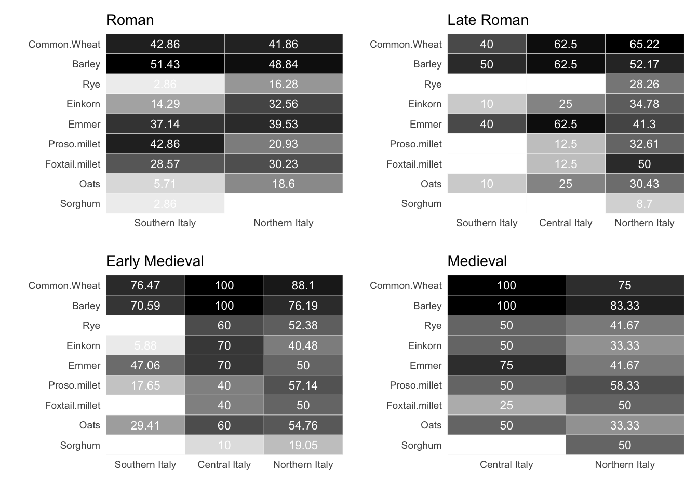
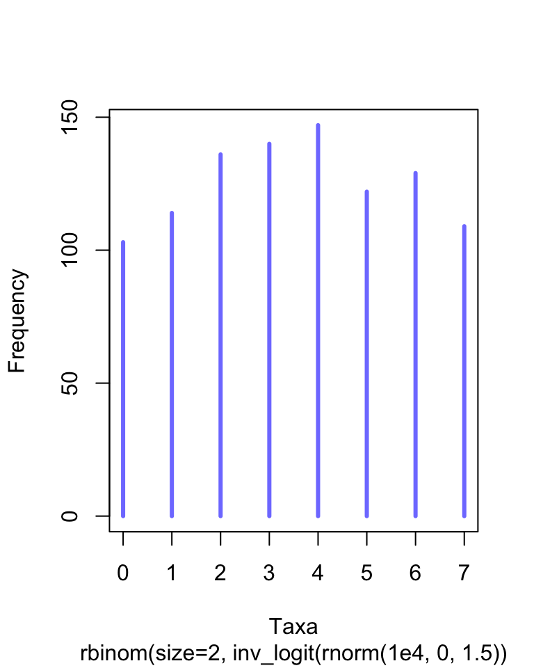
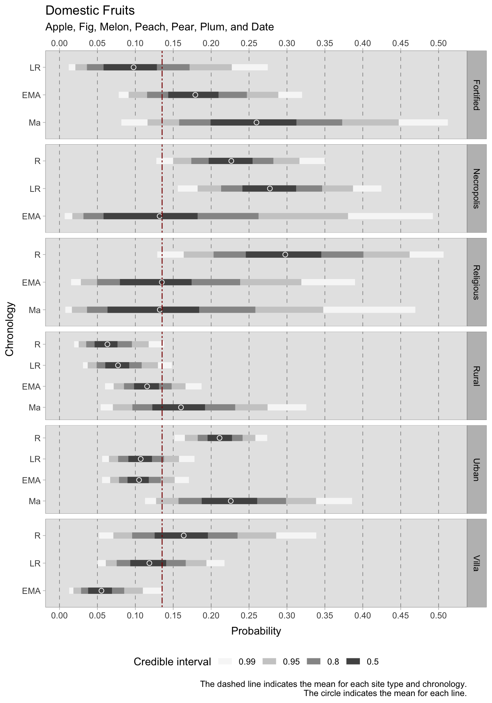
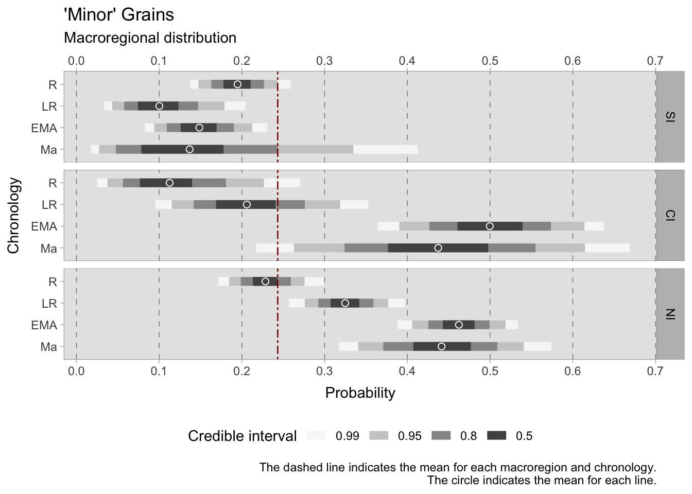
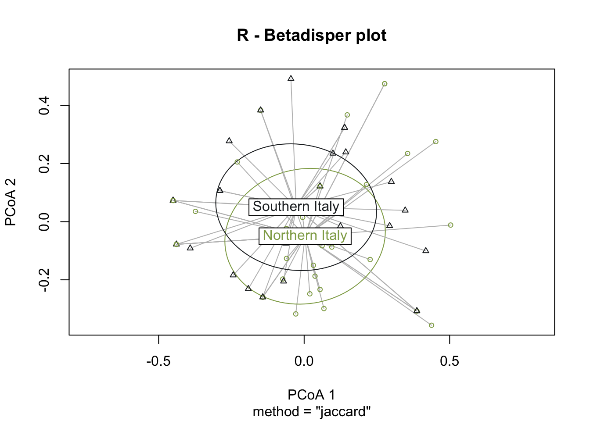
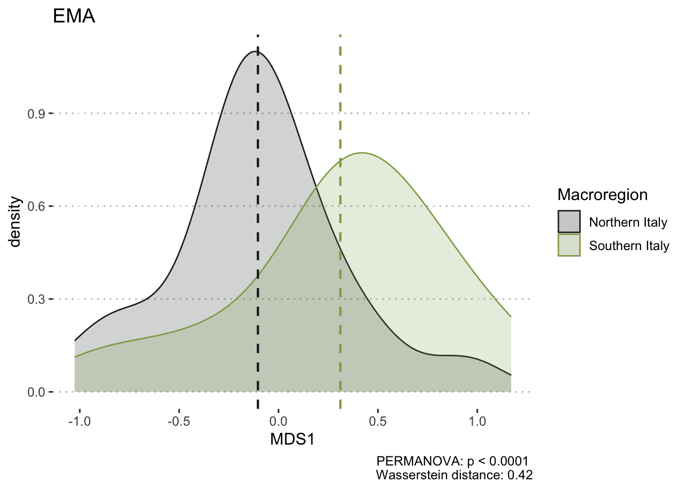
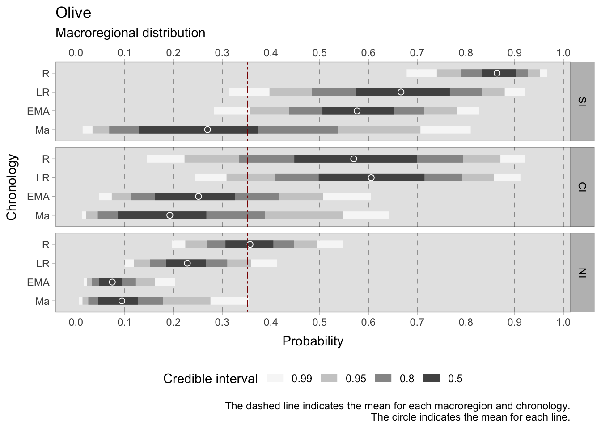
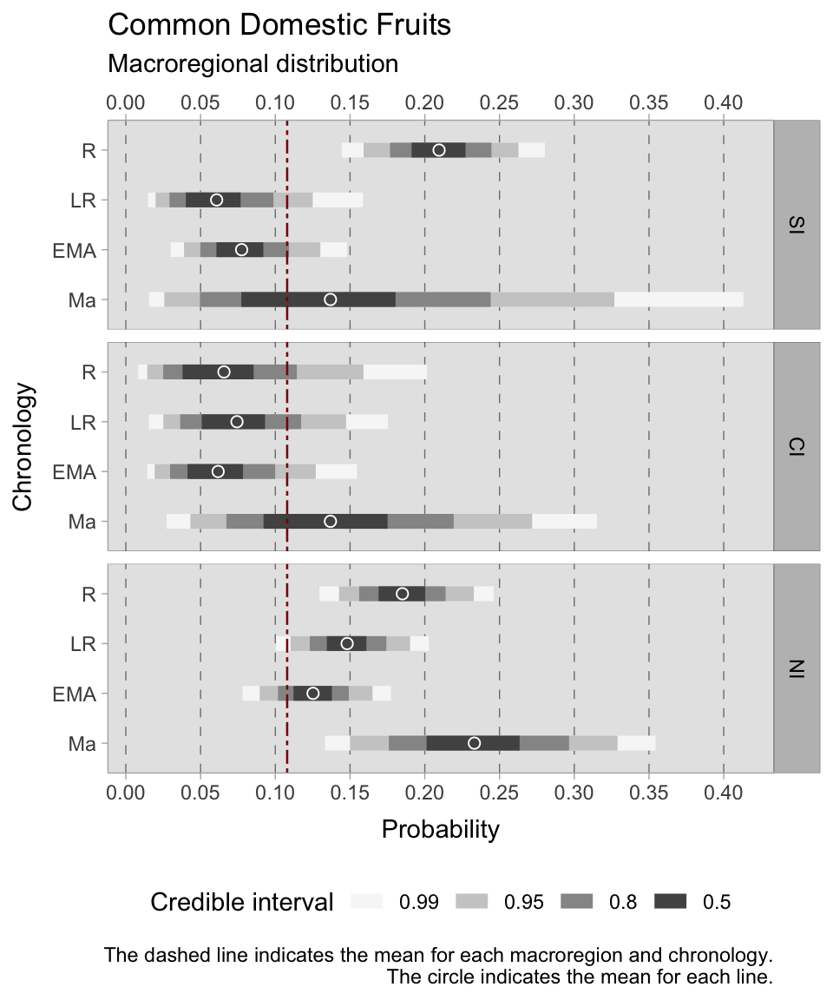

7 Archaeobotany
The results presented here are preliminary and the chapter has yet to be written.
In this chapter, I will present the macrobotanical data from 190 case studies used to carry on this research (Chapter 3), along with the statistics performed on the data. The results will be first presented temporally, and a discussion of the diachronic trends will follow at the end of the chapter.
7.1 Ubiquity
I need to justify in this section why I have used a frequentist approach. Using Jeffreys interval would be ideal, but the amount of plots needed to graphically show the results would simply be ridiculous. This decision will probably be justified by saying that these are simply exploratory introductory figures, and maybe I can plot some important taxa using Jeffreys interval.
In Chapter 6, ubiquity has been described as the best solution to present the archaeobotanical remains from the Italian peninsula, given the numerous biases in the samples. The heatmap below (Figure 7.1) provides a good overview of the temporal trends of presence of cereals, legumes, fruits and nuts in the entire area under examination.
Show the code
# Load the libraries
# Note: these libraries are used for the data visualizations in this page.
library(RColorBrewer)
library(reshape2)
library(ggplot2)
library(hrbrthemes)
library(plotly)
library(patchwork)
## UBIQUITY
## Creating a dataframe that contains the ubiquity of each century under examination.
Ubiquity_table <- data.frame(
"I BCE" = archaeobotany_tables(plants_export, -1)$Ubiquity_exp,
"I CE" = archaeobotany_tables(plants_export, 1)$Ubiquity_exp,
"II CE" = archaeobotany_tables(plants_export, 2)$Ubiquity_exp,
"III CE" = archaeobotany_tables(plants_export, 3)$Ubiquity_exp,
"IV CE" = archaeobotany_tables(plants_export, 4)$Ubiquity_exp,
"V CE" = archaeobotany_tables(plants_export, 5)$Ubiquity_exp,
"VI CE" = archaeobotany_tables(plants_export, 6)$Ubiquity_exp,
"VII CE" = archaeobotany_tables(plants_export, 7)$Ubiquity_exp,
"VIII CE" = archaeobotany_tables(plants_export, 8)$Ubiquity_exp,
"IX CE" = archaeobotany_tables(plants_export, 9)$Ubiquity_exp,
"X CE" = archaeobotany_tables(plants_export, 10)$Ubiquity_exp,
"XI CE" = archaeobotany_tables(plants_export, 11)$Ubiquity_exp
)
# Transform the ubiquity table into a matrix
Ubiquity_mat <- as.matrix(Ubiquity_table)
# Rename the centuries
colnames(Ubiquity_mat) <- c("1st c. BCE", "1st c. CE", "2nd c. CE",
"3rd c. CE", "4th c. CE", "5th c. CE",
"6th c. CE", "7th c. CE", "8th c. CE",
"9th c. CE", "10th c. CE", "11th c. CE")
# The data has to be molten to use it with ggplot2
# (package: reshape2)
Ubiquity_melt <- melt(Ubiquity_mat)
# Let's now rename the columns
colnames(Ubiquity_melt) <- c("Taxon", "Century", "Ubiquity")
# Add a column for the text tooltip
Ubiquity_melt <- Ubiquity_melt %>%
mutate(text = paste0("Taxon: ", Taxon, "\n", "Century: ", Century, "\n", "Value: ",round(Ubiquity,2)))
# Create the heatmap with ggplot2
Ubiquity_HM <- ggplot(Ubiquity_melt, aes(Century, Taxon, fill=Ubiquity, text=text)) +
geom_tile(colour="white") +
scale_alpha(range=c(0,1)) +
scale_x_discrete("", expand = c(0, 0)) +
scale_y_discrete("", expand = c(0, 0)) +
theme_grey(base_size = 9) +
theme(legend.position = "right",
axis.ticks = element_blank(),
axis.text.x = element_text(angle = 90, hjust = 0)
) +
theme(panel.grid.major = element_blank(), panel.grid.minor = element_blank())+
labs(
title="Ubiquity",
subtitle="Diachronical heatmap of recorded plant species"
) +
scale_fill_gradient(low = "white", high = "black")Posterior probability distribution of samples with cereal remains. The observed ubiquity is represented by the horizontal bar, while the highlighted areas represent the 90% Jeffreys interval.
7.1.1 Ubiquity by macroregion
The heatmap (Figure 7.1) shows the diachronical ubiquity values of the Italian mainland. It is possible however to compare plants ubiquity values in different areas of the peninsula. The R function Ubiquity_macroreg_chrono() (Section 2.3) was created to subset data from Northern, Central and Southern Italian regions, using modern boundaries. Archaeobotanical data from Italy is scarce, and subsetting the dataset required a larger chronological division to have enough sites for a valid statistical interpretation of the results. For this reason, the ubiquity values are presented using the variable Chronology rather than subsetting the individual centuries. For a clearer reading of the plot, the taxa have been divided intoCereals, Pulses and Fruits/Nuts. Some taxa have been omitted from the plot.
7.1.1.1 Cereals
It is interesting to notice how in the Roman age, cereals are similarly ubiquitous in Southern and Northern Italy, although there are some exceptions (i.e. einkorn, rye, oats, and proso millet) that can derive from the randomness of sampling. Unfortunately, only three sites provided botanical samples for Roman Central Italy and their values have then been omitted from the plot. These sites (all from Tuscany) were studied by the Roman Peasant Project (Bowes and University of Pennsylvania, 2020) and only reported three kinds of cereal: common wheat, emmer, and barley. Similar ubiquity values from Northern and Southern Italy in the Roman age may suggest similar production patterns in the whole Italian mainland, even though more data is required. In the Late Roman age, ubiquity data has been calculated for the three macroregions, with Southern Italy being the least trustworthy (five sites in total). Three crops are found on 62.5-75% of the Central Italian sites: common wheat, barley and emmer. Other cereals are present, but less ubiquitously. The cereal triad aforementioned seems to be diffused in the south as well. Conversely, in Northern Italy common wheat and barley were indeed important cultivations but had to compete with other cereals including millet, sorghum, and rye. The latter had a significant increase, being present on almost 30% of the Northern sites (as opposed to the Roman 15%). The Early Medieval age seems to mark a shift in Italian agricultural practices, as cereal ubiquities are much more variable regionally. In Southern Italy, the triad of common wheat, barley and emmer were still the predominant cereals. These cereals are ubiquitous in Central and Northern Italy as well, although these regions adopt polyculture with a diversified number of cereals. The samples from the Medieval age are fewer in number since the upper boundary of this projects chronology is the 11th c. Despite the short chronology, it is possible to make some considerations. Medieval Centraly Italy relied heavily on common wheat, barley and emmer, with other cereals increasingly important. Barley is the most ubiquitous cereal in Northern Italy in this period, followed by common wheat, millets and sorghum.

7.1.1.2 Legumes
In the Roman Age, pulses are an important part of the diet and are cultivated both in Northern and Southern Italy. In the latter, vetch/broad beans are present in 22-32% of the samples, and lentils are present in 38% of the sites. In the Late Roman Age, broad beans are equally important in Central and Northern Italy, and peas are present in 50% of the Central Italian sites. In the Early Medieval Age, pulses are present in many Central Italian sites, especially blue/red peas, broad beans and other Fabaceae. Lentils and broad beans are also cultivated in almost half of the Northern Italian sites. The importance of pulses in Central Italy is confirmed by the 11th c. samples, where every specie is present in over 66% of the sites and Fabaceae and blue/red peas are found in every sample. Conversely, in Northern Italy broad bean is found in 66% of the sites.

7.1.1.3 Fruits and nuts
Olive and grape are two essential cultivations in the Italian peninsula. Olive pits, as can be expected, are more ubiquitous in Southern Italy, where in Roman times are present in >87% of the sites and in over 58% of the sites in the following chronologies1. Conversely, grape is important in Central and Northern Italy in the Late Roman, Early Medieval and Medieval ages.
7.2 Site richness and diversity by chronology
Make sure to cite Nagendra (2002) to explain why the indices show different results.
Species richness is a measure used in ecology consisting simply in the counts of species found at a certain location. In archaeology, it can be informative for assessing how many different plants were found at a site. For the calculation, only sites that provided cereals, legumes, fruits and nuts have been used. Although this choice entails the loss of many observations, it was necessary in order to produce more credible and comparable results. The graph shows extended credible intervals for groups with fewer observations.
The aim of the following model was to calculate the mean plant richness in each chronology. The distribution chosen for the model is a Poisson distribution, used when counts do not have a fixed upper boundary (as it is the case of a binomial distribution, for instance). The outcome variable is the richness (\(R_{i}\)) for each site \({i}\), calculated as follows
\[ R_{i} = \sum_{n=1}^{k} Species_{ni}\] where \(k\) is the total number of species in a site. The goal is then to model the mean richness \(\lambda_{i}\). In addition to calculating four intercepts, one for each chronology \(ChrID\), the regression also includes a varying slope for each observation (\(\beta_{[Observations]}\)). This will later be informative in quantifying on average how much the observations in each chronology deviate from the mean (\(\alpha_{[ChrID]}\)). The formula for the Poisson regression is as follows, where priors for the intercept and slope have been chosen to be weakly informative, so that the range of the possible \(\lambda_{i}\) will remain in the outcome space.
\[R_{i} \sim Poisson({\lambda}_{i})\]
\[log {\lambda}_{i} = \alpha_{[ChrID]} + \beta_{[Observations]}\] \[\alpha_{[ChrID]} \sim Normal(3,0.5)\] \[\beta_{[Observations]} \sim Normal(0,0.2)\]


In contrast to richness, diversity takes into account also each taxons abundance. It is important to notice that in this dataset this figure can be particularly biased by samples that are extremely dominated by one taxon. For instance, if a sample was collected in a processing area or in a storage it is likely to see one taxon dominating the others. Although this was the reason for choosing to work with presence or absence data in this project, diversity indices are still provided for thoroughness sake. In particular, two indices have been calculatedthe Shannon equitability (\(E_{H}\)) and Simpson indices, both ranging from 0 (for complete unevenness) to 1 (maximum diversity). The ecology R package vegan contains functions to perform these calculations. As for the case of richness, only complete observations (containing cereals, pulses, and fruits/nuts) have been taken into account. After calculating both indices for each sample, these values have been modelled both using a beta distribution as follows \[ D_{i} \sim Beta(\mu_{i}, \phi_{i}) \] \[logit(\mu_{i}) = a_{[ChrID]}\] \[a_{[ChrID]} \sim Normal(0,1.5)\] \[\phi_{i} \sim Exp(0.1)+2\]

The graph shows extended credible intervals for groups (chronologies) with fewer observations. In particular, the Shannon equitability index showed higher variability in the 11th century. Consequently, its credible range is very wide.

7.3 Context type
Important: This section has to be rewritten as now the approach is not frequentist anymore.
It is possible to examine the distribution of plants across different site types during the four phases under examination. During the Roman period, wheat and barley were most prevalent on rural and religious sites, in the latter being used as part of ritual offerings. Minor grains were widely distributed on religious and urban sites, with rural sites and villas also showing high percentages. Legumes were also used in religious offerings but were found on both urban and rural sites. Grapes were ubiquitous across all Roman sites, with particularly high percentages in urban contexts and being extensively cultivated in large Roman estates. Olives had lower percentages, as they cannot be grown in Northern Italy, where most of the samples were collected. However, they were still widely distributed across all contexts, with peak percentages in urban and religious sites. In the Late Roman period, olive presence significantly decreased in urban sites and villas, but remained relatively unchanged in rural contexts. Similarly to olives, grape decrease in the same contexts, but slightly increase in rural sites. In addition to rural sites, grapes are also diffused in over 66% of the fortified sites (castra) that start to appear in this period. It is noteworthy that fortified sites from the Late Roman period exhibit high percentages of both minor and noble grains, possibly being stocked with the addition of pulses such as faba beans and vetch. In the EMA phase, noble/minor grains and pulses are still present in almost any fortified sites, a situation that is similar to the one in rural sites. In rural sites however minor grains (40%) and pulses (32%) are less ubiquitous in this period, although this figure might suffer from sites that only published cereal remains. Grapes are present in every religious/funerary context, followed by fortified (71%) and rural sites (66%). If olive cultivation seem to decrease in this phase, it might be because most of the sites with archaeobotanical remains are located in Northern Italy. Olives are present in 50% of the religious sites and on 36% of villa sites. Olives are absent from fortified sites in all phases, probably as a reflection of the northern location of these sites. Both rural and urban sites increase the consumption of berries in this period (13-14% ca.), which are also used for funerary offerings (14%).
Important: The new section will start from here.
To estimate the probability of occurrence of one (or more) taxa in each chronology and context, I used a Binomial distribution. The \(F\) (short for found) on the left side of the formula is the outcome variablea presence/absence indicator for the observation \(i\). In the case of a single taxon, the value can either be 0 (for absence) or 1 (for presence) and the \(T\) is 1, making the Binomial distribution effectively a Bernoulli distribution. If the model is for more than a single taxon, the \(T\) is the total number of taxa that are being modelled. For instance, in the case of Noble Grains, the model is trying to assess the probability that common wheat and barley will be on a site type in a certain chronology. The \(T\) value for noble grains will then be 2. The outcome variable \(F\) indicates the number of types of noble grains found on a particular site \(i\), and it can have values ranging from 0 (no noble grains found) to 2 (the site has both barley and common wheat). Although this is not the common way to use a binomial distribution, it was a necessary adjustment as I am working with presence/absence data. The model presented below is an intercept-only model, where the intercept \(\alpha\) carries an interaction index \({[TCid]}\) as the model will provide estimates for each context type and chronology under examination.
\[ F_{i} \sim Binomial(T, \bar{p}_{i} ) \]
\[ logit(\bar{p}_{i}) = \alpha_{[TCid]} \]
\[ \alpha_{[TCid]} \sim Normal(0,1.5) \] The rationale behind choosing a normally distributed prior for the intercept \(a\) is that it is weakly informative. Below, a simulation of the intercept prior.

Code
library(rethinking)
library(tidybayes.rethinking)
library(tidybayes)
####################
## NOBLE GRAINS
####################
Noble_Grains <- with(
Df_Cond_Plants.pa,
data.frame(
Chronology = Chronology,
Macroregion = name_macroreg,
Site_Type = as.factor(Type),
Geo = Geo,
Grain_Count = rowSums(Df_Cond_Plants.pa[,c(11,15)])
)
)
#Simplify categories
Noble_Grains$Site_Type <- str_replace(Noble_Grains$Site_Type, "Religious, monastery", "Religious")
Noble_Grains$Site_Type <- str_replace(Noble_Grains$Site_Type, "Castle", "Fortified")
Noble_Grains$Site_Type <- str_replace(Noble_Grains$Site_Type, "Castrum", "Fortified")
# Convert to list
Noble_Grain.list <- list(
NG_Found = Noble_Grains$Grain_Count,
NG_Tot = 2,
TC_ID = as.factor((interaction(Noble_Grains$Chronology,
Noble_Grains$Site_Type)))
)
Noble_Grain.list$TC_ID <- droplevels(Noble_Grain.list$TC_ID)
####################
## MINOR GRAINS
####################
# Convert to list
Minor_Grains_Type.list <- list(
MG_Found = Minor_Grains$Grain_Count,
MG_Tot = 7,
TC_ID = as.factor((interaction(Minor_Grains$Chronology,
Minor_Grains$Site_Type)))
)
Minor_Grains_Type.list$TC_ID <- droplevels(Minor_Grains_Type.list$TC_ID)
####################
## LEGUMES
####################
Legumes <- with(
Df_Cond_Plants.pa,
data.frame(
Chronology = Chronology,
Macroregion = name_macroreg,
Site_Type = as.factor(Type),
Geo = Geo,
Seed_Count = rowSums(Df_Cond_Plants.pa[,c(21,27)]) # Excludes Unsp. Pulses
)
)
#Simplify categories
Legumes$Site_Type <- str_replace(Legumes$Site_Type, "Religious, monastery", "Religious")
Legumes$Site_Type <- str_replace(Legumes$Site_Type, "Castle", "Fortified")
Legumes$Site_Type <- str_replace(Legumes$Site_Type, "Castrum", "Fortified")
# Convert to list
Legumes.list <- list(
Leg_Found = Legumes$Seed_Count,
Leg_Tot = 7,
TC_ID = as.factor((interaction(Legumes$Chronology,
Legumes$Site_Type)))
)
Legumes.list$TC_ID <- droplevels(Legumes.list$TC_ID)
####################
## GRAPE
####################
Grape <- with(
Df_Cond_Plants.pa,
data.frame(
Chronology = Chronology,
Macroregion = name_macroreg,
Site_Type = as.factor(Type),
Geo = Geo,
Present = ifelse(Grape>0, 1, 0)
)
)
#Simplify categories
Grape$Site_Type <- str_replace(Grape$Site_Type, "Religious, monastery", "Religious")
Grape$Site_Type <- str_replace(Grape$Site_Type, "Castle", "Fortified")
Grape$Site_Type <- str_replace(Grape$Site_Type, "Castrum", "Fortified")
# Convert to list
Grape.list <- list(
Grape_Found = Grape$Present,
TC_ID = as.factor((interaction(Legumes$Chronology,
Legumes$Site_Type)))
)
Grape.list$TC_ID <- droplevels(Grape.list$TC_ID)
####################
## OLIVES
####################
Olives <- with(
Df_Cond_Plants.pa,
data.frame(
Chronology = Chronology,
Macroregion = name_macroreg,
Site_Type = as.factor(Type),
Geo = Geo,
Present = ifelse(Olive>0, 1, 0)
)
)
#Simplify categories
Olives$Site_Type <- str_replace(Olives$Site_Type, "Religious, monastery", "Religious")
Olives$Site_Type <- str_replace(Olives$Site_Type, "Castle", "Fortified")
Olives$Site_Type <- str_replace(Olives$Site_Type, "Castrum", "Fortified")
# Convert to list
Olive.list <- list(
Olive_Found = Olives$Present,
TC_ID = as.factor((interaction(Olives$Chronology,
Olives$Site_Type)))
)
Olive.list$TC_ID <- droplevels(Olive.list$TC_ID)
####################
## NUTS
####################
Nuts <- with(
Df_Cond_Plants.pa,
data.frame(
Chronology = Chronology,
Macroregion = name_macroreg,
Site_Type = as.factor(Type),
Geo = Geo,
Seed_Count = rowSums(Df_Cond_Plants.pa[,c(29,31)])
)
)
#Simplify categories
Nuts$Site_Type <- str_replace(Nuts$Site_Type, "Religious, monastery", "Religious")
Nuts$Site_Type <- str_replace(Nuts$Site_Type, "Castle", "Fortified")
Nuts$Site_Type <- str_replace(Nuts$Site_Type, "Castrum", "Fortified")
# Convert to list
Nuts.list <- list(
Nuts_Found = Nuts$Seed_Count,
Nuts_Tot = 3,
TC_ID = as.factor((interaction(Nuts$Chronology,
Nuts$Site_Type)))
)
Nuts.list$TC_ID <- droplevels(Nuts.list$TC_ID)Code
# Eval is set to false because the models have been saved
# Create a binomial model, where N is 2 because that is the total number of noble
# grains studied in this thesis
m_ng_type <- ulam(
alist(
NG_Found ~ dbinom( 2 , p ),
logit(p) <- TypeChr[TC_ID],
TypeChr[TC_ID] ~ dnorm(0,1.5)
), data=Noble_Grain.list , chains=4
)
saveRDS(m_ng_type, "stan_models/m_ng_type.rds")
# Create a binomial model, where N is 2 because that is the total number of noble
# grains studied in this thesis
m_mg_type <- ulam(
alist(
MG_Found ~ dbinom( 7 , p ),
logit(p) <- TypeChr[TC_ID],
TypeChr[TC_ID] ~ dnorm(0,1.5)
), data=Minor_Grains_Type.list , chains=4
)
saveRDS(m_mg_type, "stan_models/m_mg_type.rds")
# Create a binomial model, where N is 2 because that is the total number of noble
# grains studied in this thesis
m_leg_type <- ulam(
alist(
Leg_Found ~ dbinom( 7 , p ),
logit(p) <- TypeChr[TC_ID],
TypeChr[TC_ID] ~ dnorm(0,1.5)
), data=Legumes.list , chains=4
)
saveRDS(m_leg_type, "stan_models/m_leg_type.rds")
# Create a binomial model, where N is 2 because that is the total number of noble
# grains studied in this thesis
m_grape_type <- ulam(
alist(
Grape_Found ~ dbinom( 1 , p ), # Basically a bernoulli dist
logit(p) <- TypeChr[TC_ID],
TypeChr[TC_ID] ~ dnorm(0,1.5)
), data=Grape.list , chains=4
)
saveRDS(m_grape_type, "stan_models/m_grape_type.rds")
# Create a binomial model, where N is 2 because that is the total number of noble
# grains studied in this thesis
m_olives_type <- ulam(
alist(
Olive_Found ~ dbinom( 1 , p ), # Basically a bernoulli dist
logit(p) <- TypeChr[TC_ID],
TypeChr[TC_ID] ~ dnorm(0,1.5)
), data=Olive.list , chains=4
)
saveRDS(m_olives_type, "stan_models/m_olives_type.rds")
# NUTS
# Create a binomial model, where N is 3 because that is the total number of nuts
# studied in this thesis
m_nuts_type <- ulam(
alist(
Nuts_Found ~ dbinom( 3 , p ),
logit(p) <- TypeChr[TC_ID],
TypeChr[TC_ID] ~ dnorm(0,1.5)
), data=Nuts.list , chains=4
)
saveRDS(m_nuts_type, "stan_models/m_nuts_type.rds")
# BERRIES
# Create a binomial model
m_berries_type <- ulam(
alist(
Berries_Found ~ dbinom( 9 , p ),
logit(p) <- TypeChr[TC_ID],
TypeChr[TC_ID] ~ dnorm(0,1.5)
), data=Berries_type.list , chains=4
)
saveRDS(m_berries_type, "stan_models/m_berries_type.rds")



7.3.1 Richness and diversity


7.3.1.1 Richness in urban contexts
The richness of plants in urban contexts has been calculated for every phase. As not every sample reported cereals, fruits/nuts and legumes, a correction has also been applied to exclude contexts that did not report the three types of plant taxa under examination. This correction has however strong disadvantages as it removes sites where the absence of certain plant categories may have been deliberate (e.g., storages). However, if the figures vary considerably (especially in the case of the 11th century CE which only consists of 2 samples after the correction), the general trend is similar after the correction. Plant richness in urban contexts slightly decreases after the Roman age, but early medieval cities are richer in plants when compared to the Roman and Late Roman phases. In the 11th century, plant richness increases further. These values will be discussed in the results chapter.
| Chronology | Richness | Samples | Richness* | Samples* |
|---|---|---|---|---|
| R | 6.5 | 44 | 8.45 | 22 |
| LR | 5.9 | 24 | 7.2 | 10 |
| EMA | 7.2 | 25 | 9.6 | 8 |
| Ma | 9 | 8 | 17.5 | 2 |
7.4 Macroregion
7.4.1 Cereals
7.4.1.1 Noble grains
The model for the diachronic probability of occurrence of plant taxa in the Italian macroregions follows the same strategy employed for the context type models. The chosen distribution is a Binomial where \(F\) (short for found) on the left side of the formula is the outcome variablea presence/absence indicator for the observation \(i\). In the case of a single taxon, the value can either be 0 (for absence) or 1 (for presence) and the \(T\) is 1, making the Binomial distribution effectively a Bernoulli distribution. If the model is for more than a single taxon, the \(T\) is the total number of taxa that are being modelled. The model presented below is an intercept-only model, where the intercept \(\alpha\) carries an interaction index \({[REGid]}\) as the model will provide estimates for each context type and chronology under examination.
\[ F_{i} \sim Binomial(T, \bar{p}_{i} ) \]
\[ logit(\bar{p}_{i}) = \alpha_{[REGid]} \]
\[ \alpha_{[REGid]} \sim Normal(0,1.5) \]

7.4.1.2 Minor grains
The model for minor grains in the Italian macroregion uses a Binomial distribution where \(F\) (short for found) on the left side of the formula is the outcome variablea presence/absence indicator for the observation \(i\). As there are seven types of minor grains under investigation, the binomial will take 7 as maximum (\(T\)). This model effectively shows the probability of a single site to be reliant on minor grains. Emmer for instance, is ubiquitous in Italy, but in many cases it is the only minor grain found among other cereals in a context. Modelling the presence of more minor grains in a site can give insights on the rural economy. The model presented below is an intercept-only model, where the intercept \(\alpha\) carries an interaction index \({[REGid]}\) as the model will provide estimates for each context type and chronology under examination.
\[ F_{i} \sim Binomial(7, \bar{p}_{i} ) \]
\[ logit(\bar{p}_{i}) = \alpha_{[REGid]} \]
\[ \alpha_{[REGid]} \sim Normal(0,1.5) \]

7.4.1.3 Richness and diversity
The pre processing part should go here
| Chronology | Northern Italy | Central Italy | Southern Italy |
|---|---|---|---|
| Roman | 43 | 5 | 35 |
| Late Roman | 46 | 8 | 10 |
| Early Medieval | 42 | 10 | 17 |
| 11th c. | 12 | 4 | 2 |
| Chronology | Northern Italy | Central Italy | Southern Italy |
|---|---|---|---|
| Roman | 36 | 3 | 27 |
| Late Roman | 42 | 5 | 5 |
| Early Medieval | 39 | 10 | 13 |
| 11th c. | 12 | 4 | 1 |
| Chronology | Northern Italy | Central Italy | Southern Italy |
|---|---|---|---|
| Roman | 44483 | 164 | 28401 |
| Late Roman | 422183 | 8328 | 241 |
| Early Medieval | 473423 | 104556 | 15065 |
| 11th c. | 46764 | 37148 | 352 |
| Chronology | Northern Italy | Central Italy | Southern Italy |
|---|---|---|---|
| Roman | 2.94 | 1.67 | 2.93 |
| Late Roman | 3.76 | 3.40 | 2.60 |
| Early Medieval | 5.26 | 5.50 | 2.85 |
| 11th c. | 4.67 | 5.00 | 3.00 |
Cereals share similar presence values in Roman Northern and Southern Italian sites (?fig-cereal-richness-RvsEMA). Central Italy reports higher values, although this is based only on three sites and hence it is not reliable. During the Early Middle Ages, Central Italy again is the richest in cereals, closely followed by Northern Italy. Interestingly, Southern Italy still reports values very close to the Roman age. A full list of the Southern Italian EMA sites is reported in Table 7.6.
| ID | Site | Region | Geography | Type | Culture/Influence |
|---|---|---|---|---|---|
| 98 | S. Maria in Civit, D85 | Molise | Hilltop | Urban | Lombard |
| 107 | S. Giovanni di Ruoti, Phase 3A | Basilicata | Mountain | Monastery | Lombard |
| 107 | S. Giovanni di Ruoti, Phase 3B | Basilicata | Mountain | Monastery | Lombard |
| 198 | Salapia, area botteghe, US 2475 | Puglia | Coast/Lagoon | Urban | Lombard |
| 198 | Salapia, area botteghe, US 2437 | Puglia | Coast/Lagoon | Urban | Lombard |
| 199 | Salapia, area conceria, US 2054 | Puglia | Coast/Lagoon | Urban | Lombard |
| 199 | Salapia, area conceria, US 2211-2217 | Puglia | Coast/Lagoon | Urban | Lombard |
| 199 | Salapia, area conceria, 8th-9th c. | Puglia | Coast/Lagoon | Urban | Lombard |
| 196 | Faragola, wastepit 61 | Puglia | Plain | Rural, villa | Lombard |
| 196 | Faragola, wastepit 66 | Puglia | Plain | Rural, villa | Lombard |
| 234 | Colle Castellano, Phase 3-4 | Molise | Hill | Urban | Lombard |
| 177 | San Vincenzo al Volturno, kitchen area | Molise | Hill | Monastery | Lombard |
| 101 | Supersano, loc. Scorpo | Puglia | Plain | Rural | Byzantine |
| 250 | Apigliano, 9th-10th c., pits | Puglia | Plain | Rural | Byzantine |
| 250 | Apigliano, 10th-11th c., pits | Puglia | Plain | Rural | Byzantine |
| 196 | Faragola, granary A7 | Puglia | Plain | Rural, villa | Lombard |
| 196 | Faragola, granary A8 | Puglia | Plain | Rural, villa | Lombard |
7.4.1.4 Assessing the difference
Permutational multivariate analysis of variance (PERMANOVA) is a non-parametric multivariate statistical test used to compare group of objects. By using measure space, the null hypothesis that the centroids and dispersion of groups are identical is tested. The null hypothesis is rejected if either the centroid or the spread of the objects differs between the groups. A prior calculation of the distance between any two objects included in the experiment is used to determine whether the test is valid or not2 (Anderson, 2017). In this context, the null hypothesis is that there is no regional difference in the cereals dataset, with cereals being evenly distributed across macroregions and chronologies.
The suggestion of an Early Medieval shift in cereal farming stated in Section 7.1.1 and Section 7.4.1.3 needs statistical support. Considering that data is not unimodal and that we are dealing with presence/absence analysis, the best choice is to use a non-parametric test as PERMANOVA on the early medieval botanical dataset. Prior to performing the test, it was necessary to pre-process data by:
Selecting all the cereals columns of the plant remains table, keeping the categorical variables:
Macroregion.Removing empty rows (samples that only reported seeds/fruits, but not cereals).
Selecting only samples that had at least 10 seeds.
Transforming the raw counts into presence/absence, using the function
decostand()(method=pa) in theRpackagevegan(Oksanen et al., 2020).
After the pre-processing, it was possible to run the PERMANOVA using the function adonis2() in the package vegan. The function creates a distance matrix and computes an analysis of variance on the matrix. The method chosen to calculate the distance matrix is the jaccard distance. The Jaccard distance, based on the Jaccard similarity index, is a value of dissimilarity between sample sets (Kosub, 2019). When compared to other dissimilarity indices, it is more appropriate for presence/absence analyses as it is not based on Euclidean distance.
Permanova
| Phase | R2 | p-value |
|---|---|---|
| Roman | 0.03 | 0.0977902 |
| Early Medieval | 0.10 | 0.0001000 |
The calculation of PERMANOVA on the Roman dataset using the variable Macroregion reported a not statistically significant p-value, suggesting a degree of homogeneity. On the other hand, when applied to the early Medieval dataset, the results were highly significant (0<p<0.001) with a 99.99% confidence. PERMANOVA has not been calculated on the Late Roman dataset as samples from Southern Italy were too scarce. To confirm the significance of the results of PERMANOVA applied to the EMA dataset, it is necessary to check that its assumptions are met (especially since we are dealing with small groups of data). Firstly, we check the homogeneity of variances. The function betadisper() from the package vegan provides the distances of group samples from centroids. If the variation is even, the null hypothesis of no difference in dispersion between groups is accepted. To test the variation, it is possible to use the analysis of variance (ANOVA).
Betadisper
## BETADISPER
# Creating distance matrix for the R period
DistMat.R <- vegdist(Bot_PA_data.R,
method="jaccard",
na.rm=TRUE)
# Creating distance matrix for the EMA period
DistMat.EMA <- vegdist(Bot_PA_data.EMA,
method="jaccard",
na.rm=TRUE)
# Betadisper: distances of group samples from centroids
Betadisper.R <- betadisper(DistMat.R,
Bot_PA_categ.R$Macroregion)
Betadisper.EMA <- betadisper(DistMat.EMA,
Bot_PA_categ.EMA$Macroregion)
# Printing distances:
Betadisper.GroupDistances = data.frame(
Phase = c("Roman", "Early Medieval"),
"Northern Italy" = c(Betadisper.R$group.distances[1],Betadisper.EMA$group.distances[1]),
"Southern Italy" = c(Betadisper.R$group.distances[2],Betadisper.EMA$group.distances[2])
)| Phase | Northern Italy | Southern Italy |
|---|---|---|
| Roman | 0.53 | 0.48 |
| Early Medieval | 0.37 | 0.38 |
| Phase | p-value |
|---|---|
| Roman | 0.1892284 |
| Early Medieval | 0.9374030 |



The betadisper() graphs (Figure 7.11) show similar distances from the centroids for the categories Northern Italy and Southern Italy. In addition, the ANOVA on the betadisper() shows that the separation is not significant (p-value over the significance threshold), meaning that the groups dispersions are homogeneous. We can thus be confident in the PERMANOVA results and accept the difference between the two groups of sites under investigation. In other words, the Southern and Northern Italian group of sites are different during the Early Middle Ages for what concerns cereal farming.
Running the same tests on the Roman sites failed to separate the two groups of sites, confirming that there was not a significant difference in the types of cereals cultivated during the Roman age between Northern and Southern Italy.
7.4.1.5 Quantifying the separation: nMDS
The Wasserstein distance (or earths mover distance) is a measure of distance between two probability distributions on a metric space.
In addition to statistically testing the separation between the Northern and Southern Italian early medieval cereals dataset (Section 7.4.1.4), it is possible to measure the distance between groups of sites both in the Roman and early Middle ages. For this task, a dimensionality reduction algorithm has been chosen: the non-metric multidimensional scaling, from the R library vegan. A more in-depth explanation of the algorithm can be read in Section 6.3.3.2.1. To avoid fallacy in computations, the macroregion Central Italy and the chronologies LR (Late Roman) and Ma (11th c. onwards) have been excluded from this testthe uneven distribution of the group of samples required a cautious approach. The nMDS has been run with a reduction to only one dimension, using KDE plots to visualize the results. Setting the dimension to one allows easier calculations of distance. In Figure 7.12 (a), it is possible to see the nMDS performed on the Roman cereals presence/absence dataset. As already pointed out, the PERMANOVA did not produce significant results for this dataset and the Wasserstein distance (calculated with the wasserstein1d() function in the transport library) is indeed shorter for the Roman dataset. For both chronologies there is an overlap in the curves, which is more considerable in the Roman age (indicating that the group of samples are more similar). The overlap for the EMA groups (Figure 7.12, b) is probably due to the fact that the presence of the noble grains is not by itself a marker of Southern Italian sitesthese grains are also very common in the North. The difference is that in the South noble grains are not cultivated in conjunction with other grains. The graph for the EMA chronology shows a clearer separation of the macroregional groups, with some minor overlaps. Moreover, the graph also displays variability in the Northern Italian dataset. The variability can also be assessed from the outliers in the boxplots in Figure 7.12.
nMDS and Wasserstein distance
library(ggpubr)
# Perform the metaMDS to 1D for Df_Cereals_R and Df_Cereals_EMA
mds_R <- metaMDS(Bot_PA_data.R, k=1, distance = "jaccard")
mds_EMA <- metaMDS(Bot_PA_data.EMA, k=1, distance = "jaccard")
# Add the Macroregion data to the metaMDS results for both dataframes
mds_df_R <- data.frame(mds_R$points, Macroregion = Bot_PA_categ.R$Macroregion)
mds_df_EMA <- data.frame(mds_EMA$points, Macroregion = Bot_PA_categ.EMA$Macroregion)
# Create dataframes to calculate wasserstein distance
library(transport)
MDS_Scores_R_SI <- (subset(mds_df_R, Macroregion=="Southern Italy"))$MDS1
MDS_Scores_R_NI <- (subset(mds_df_R, Macroregion=="Northern Italy"))$MDS1
MDS_Scores_EMA_SI <- (subset(mds_df_EMA, Macroregion=="Southern Italy"))$MDS1
MDS_Scores_EMA_NI <- (subset(mds_df_EMA, Macroregion=="Northern Italy"))$MDS1
# Create the plots
mds_R.plot <- ggplot(
data=mds_df_R,
aes(x=MDS1,
group=Macroregion,
color=Macroregion,
fill=Macroregion)) +
geom_density(adjust=1.5, alpha=.2) +
geom_vline(aes(xintercept=mean(MDS_Scores_R_SI)),
color="#90a955", linetype="dashed", linewidth=.8)+ #South
geom_vline(aes(xintercept=mean(MDS_Scores_R_NI)),
color="#212529", linetype="dashed", linewidth=.8)+ #North
scale_fill_manual(values=c("#212529","#90a955"))+
scale_color_manual(values=c("#212529","#90a955"))+
theme_pubclean()+
theme(legend.position = "none")+
labs(
title="Roman age",
caption = paste0(
"PERMANOVA: p > 0.05 \n",
"Wasserstein distance: ", round(
wasserstein1d(MDS_Scores_R_SI,MDS_Scores_R_NI),2
)))
mds_EMA.plot <- ggplot(
data=mds_df_EMA,
aes(x=MDS1, group=Macroregion, color=Macroregion, fill=Macroregion)
) +
scale_alpha(guide = 'none')+
geom_density(adjust=1.5, alpha=.2) +
geom_vline(
aes(xintercept=mean(MDS_Scores_EMA_SI), color="mean"),
color="#90a955", linetype="dashed", linewidth=.8)+ #South
geom_vline(
aes(xintercept=mean(MDS_Scores_EMA_NI)),
color="#212529", linetype="dashed", linewidth=.8)+ #North
scale_fill_manual(values=c("#212529","#90a955"))+
scale_color_manual(values=c("#212529","#90a955"))+
theme_pubclean()+
labs(
title="EMA",
caption = paste0(
"PERMANOVA: p < 0.0001 \n",
"Wasserstein distance: ", round(
wasserstein1d(MDS_Scores_EMA_SI,MDS_Scores_EMA_NI),2
)))+
theme(legend.position = "right")
mds_R.boxplot <- ggplot(mds_df_R, aes(x=Macroregion, y=MDS1, fill=Macroregion)) +
geom_boxplot(alpha=.2)+
scale_fill_manual(values=c("#212529","#90a955"))+
scale_color_manual(values=c("#212529","#90a955"))+
theme_pubclean()+
labs(
title="Roman Age")+
theme(legend.position = "none")
mds_EMA.boxplot <- ggplot(mds_df_EMA, aes(x=Macroregion, y=MDS1, fill=Macroregion)) +
geom_boxplot(alpha=.2)+
scale_fill_manual(values=c("#212529","#90a955"))+
scale_color_manual(values=c("#212529","#90a955"))+
theme_pubclean()+
labs(
title="EMA")+
theme(legend.position = "right")



7.4.2 Legumes

7.4.3 Fruits
7.4.3.1 Grape
7.4.3.2 Olives

7.4.3.3 Nuts

7.4.3.4 Domestic and wild fruits


7.5 Altitude
The creation of altitude models was not possible for every plant investigated in this study. As the process is very time consuming, it was necessary to select only plants that are most likely to be either positively or negatively impacted by altitude, or taxa that are cultivated for economic reasons. Primary importance was thus given to cereals. Since not every cereal can be cultivated at high altitudes, it was more appropriate to model them individually instead of grouping them into noble and minor grains. For reference, below is a breakdown of the elevation of sites during the four chronologies under investigation.
The probability of occurrence of the most common cereal remains can be modelled against the elevation of sites in the four time periods under consideration. It is worth noting that the sites where the archaeobotanical remains have been found are not evenly distributed. In the Roman age, most sites investigated are located between 0 and 100 MSL, whereas after there is an increasing number of remains from sites between at higher elevations. Whether this reflects a real shift in settlement patterns is outside the aims of this study, but it might still be informative to visualise the different distribution of sites across elevations.

7.5.1 Model specification and priors
\[ P_{i} \sim Bernoulli(\bar{p}_{i}) \]
\[ logit(\bar{p}_{i}) = \alpha_{[ChrID]} + \beta_{[ChrID]}\cdot Alt_{i} \]
\[ \alpha_{ChrID} \sim Normal(0,1.5) \]
\[ \beta_{ChrID} \sim Normal(0,1.5) \]
\[ \phi \sim Exponential(1) \]
7.5.2 Cereals


7.5.2.1 Community plot
7.5.3 Legumes

7.5.4 Fruits
7.5.4.1 Grape

7.5.4.2 Olives

7.6 Model comparisons
7.6.1 Precipitation
7.6.1.1 Model specification and priors
7.6.1.1.1 Model 1: Precipitation only
The following model uses standardized mean annual precipitation values as a coefficient for the slope and weakly informative priors for both the intercept and the slope.
\[ P_{i} \sim Bernoulli(\bar{p}_{i}) \]
\[ logit(\bar{p}_{i}) = \alpha_{[ChrID]} + bPrecip_{[ChrID]}\cdot MeanAnnualPrecip \]
\[ \alpha_{ChrID} \sim Normal(0,1.3) \]
\[ bPrecip_{ChrID} \sim Normal(0,1.3) \]
7.6.1.1.2 Model 2: Altitude only
The following model uses altitude values (in km) as a coefficient for the slope and weakly informative priors for both the intercept and the slope. It is the same model presented before.
\[ P_{i} \sim Bernoulli(\bar{p}_{i}) \]
\[ logit(\bar{p}_{i}) = \alpha_{[ChrID]} + bAlt_{[ChrID]}\cdot Altitude \]
\[ \alpha_{ChrID} \sim Normal(0,1.3) \]
\[ bAlt_{ChrID} \sim Normal(0,1.3) \]
7.6.1.1.3 Model 3: Altitude and Precipitation
The following model uses altitude (in km) and standardized mean annual precipitation values as coefficients for the slope, and weakly informative priors for both the intercept and the slope.
\[ P_{i} \sim Bernoulli(\bar{p}_{i}) \]
\[ logit(\bar{p}_{i}) = \alpha_{[ChrID]} + bAlt_{[ChrID]}\cdot Altitude + bPrecip_{[ChrID]}\cdot MeanAnnualPrecip \]
\[ \alpha_{ChrID} \sim Normal(0,1.3) \]
\[ bAlt_{ChrID} \sim Normal(0,1.3) \]
\[ bPrecip_{ChrID} \sim Normal(0,1.3) \]
7.6.1.1.4 Prior predictive simulations
We also want to make sure that the priors are weakly informative and are not deeply impacting the models.


7.6.1.2 Performance and comparisons
The comparison of the three models using the WAIC measure does not show a significant difference between the three models. Although for simplicity only the common wheat models are shown, repeated calculation for several other plants (including non cereal plants) did not show a significant impact of adding mean annual precipitation to the model.
WAIC SE dWAIC dSE pWAIC weight
m_Cwheat_precip 274.7821 12.76496 0.000000 NA 7.086813 0.76350062
m_CWheat_precip_alt 277.9369 13.14621 3.154749 1.899620 9.125909 0.15767553
m_CWheat_altitude 279.3235 13.53368 4.541397 5.226394 6.046197 0.07882385# Test prior
m_Cwheat_precipHamiltonian Monte Carlo approximation
2000 samples from 4 chains
Sampling durations (seconds):
warmup sample total
chain:1 0.15 0.15 0.30
chain:2 0.16 0.13 0.29
chain:3 0.16 0.14 0.30
chain:4 0.16 0.13 0.29
Formula:
A ~ dbinom(1, p)
logit(p) <- a[Chr_id] + bPrec[Chr_id] * MeanPrec
a[Chr_id] ~ dnorm(0, 1.3)
bPrec[Chr_id] ~ dnorm(0, 1.3)
7.7 Temperature
7.7.0.1 Model 1: Temperature only
The following model uses mean annual temperature values as a coefficient for the slope and weakly informative priors for both the intercept and the slope.
\[ P_{i} \sim Bernoulli(\bar{p}_{i}) \]
\[ logit(\bar{p}_{i}) = \alpha_{[ChrID]} + bTemp_{[ChrID]}\cdot MeanAnnualTemp \]
\[ \alpha_{ChrID} \sim Normal(0,1.3) \]
\[ bTemp_{ChrID} \sim Normal(0,1.3) \]
\[ \phi \sim Exponential(1) \]
7.7.0.2 Model 2: Altitude only
The following model uses altitude values (in km) as a coefficient for the slope and weakly informative priors for both the intercept and the slope. It is the same model presented before.
\[ P_{i} \sim Bernoulli(\bar{p}_{i}) \]
\[ logit(\bar{p}_{i}) = \alpha_{[ChrID]} + bAlt_{[ChrID]}\cdot Altitude \]
\[ \alpha_{ChrID} \sim Normal(0,1.3) \]
\[ bAlt_{ChrID} \sim Normal(0,1.3) \]
\[ \phi \sim Exponential(1) \]
7.7.0.3 Model 3: Altitude and Temperature
The following model uses altitude (in km) and standardized mean annual temperature values as coefficients for the slope, and weakly informative priors for both the intercept and the slope.
\[ P_{i} \sim Bernoulli(\bar{p}_{i}) \]
\[ logit(\bar{p}_{i}) = \alpha_{[ChrID]} + bAlt_{[ChrID]}\cdot Altitude + bTemp_{[ChrID]}\cdot MeanAnnualTemp \]
\[ \alpha_{ChrID} \sim Normal(0,1.3) \]
\[ bAlt_{ChrID} \sim Normal(0,1.3) \]
\[ bTemp_{ChrID} \sim Normal(0,1.3) \]
\[ \phi \sim Exponential(1) \]
7.7.0.4 Prior predictive simulations
We also want to make sure that the priors are weakly informative and are not deeply impacting the models.


7.7.1 Performance and comparisons
The creation of models for each plant is extremely time consuming, and for the purposes of this comparison I chose to compare only taxa that are known to be more sensitive to temperature and that have economic implications.
7.7.1.1 Common wheat
The comparison of the three models using the WAIC, although showing a slightly larger distance as opposed to the precipitation models, is still not significant enough to justify the introduction of another predictor in the model.
WAIC SE dWAIC dSE pWAIC
m_Cwheat_temperature 278.6323 14.34055 0.0000000 NA 7.874550
m_CWheat_altitude 279.3235 13.53368 0.6912639 4.2142679 6.046197
m_CWheat_temperature_alt 281.4353 14.70436 2.8030424 0.8399438 9.507590
weight
m_Cwheat_temperature 0.5117720
m_CWheat_altitude 0.3622184
m_CWheat_temperature_alt 0.1260096

7.7.1.2 Rye
The comparison of the three models using the WAIC is not significant enough to justify the introduction of another predictor in the model.
WAIC SE dWAIC dSE pWAIC
m_Rye_temperature 229.9209 18.08467 0.000000 NA 8.623651
m_Rye_temperature_alt 232.3080 18.31918 2.387091 1.072195 10.211306
m_Rye_altitude 240.4145 16.09612 10.493538 9.147829 5.985891
weight
m_Rye_temperature 0.764286992
m_Rye_temperature_alt 0.231689419
m_Rye_altitude 0.004023589

7.7.1.3 Legumes
The comparison of the three models using the WAIC is not significant enough to justify the introduction of another predictor in the model.
WAIC SE dWAIC dSE pWAIC
m_Legumes_altitude 890.8435 35.15337 0.000000 NA 14.51364
m_Legumes_temperature 894.4890 35.14409 3.645444 7.649821 16.00504
m_Legumes_temperature_alt 897.6609 35.27224 6.817366 6.403353 22.00542
weight
m_Legumes_altitude 0.83705120
m_Legumes_temperature 0.13525518
m_Legumes_temperature_alt 0.02769362

7.7.1.4 Grape
The combination of temperature and altitude as predictors for grape occurrence did not produce any strong enough difference that would favour the use of a predictor in place of the other.
WAIC SE dWAIC dSE pWAIC weight
m_grape_altitude 272.7094 11.88115 0.000000 NA 5.371696 0.70273289
m_Grape_temperature_alt 274.5742 13.48959 1.864836 5.361352 7.709453 0.27659630
m_Grape_temperature 279.7619 13.69224 7.052509 7.102870 6.392521 0.02067081

7.7.1.5 Olive
If the model is applied to other types of plants, the situation changes. In the case of olives the prediction accuracy increases when the mean annual temperature and the altitudes are both slope coefficients.
WAIC SE dWAIC dSE pWAIC
m_Olive_temperature_alt 225.6696 14.97050 0.000000 NA 6.386533
m_Olive_temperature 226.7000 15.39914 1.030409 1.288141 5.801423
m_Olive_altitude 260.5728 12.54551 34.903251 10.757408 4.181470
weight
m_Olive_temperature_alt 6.260257e-01
m_Olive_temperature 3.739743e-01
m_Olive_altitude 1.649862e-08Given that the model which used temperature and altitude performed better than the individual slope models, it is worth it to look at the predicted olive occurrence probability plotted against:
the standardised mean annual temperatures.
elevation (km).
The chronological differences seem to be consistent until the 11th century. Sites with higher temperatures have a higher likelihood of consuming/producing olives. Likewise, sites with higher altitudes have a reduced probability of consuming or producing the same plant.


7.8 Cereal proportions
The computations on the archaeobotanical dataset that have been done so far are based on presence/absence values. The reasons relate to the numerous biases present in the samples, which skew the distributions. However, this approach does not allow to draw any quantitative conclusion. From a qualitative standpoint, it can be informative to see which sites are producing different results by calculating the ratio of single cereal taxa on the total of cereal grains found in a certain sample. For the sake of exploring the quantitative trends, keeping in mind that these results are heavily biased by outliers and sample sizes, summary tables grouped by chronology were produced. In particular, two tables are presented here. The first (Table 7.10) takes into account missing values, so that if a particular taxon was not found in a sample the missing value was converted to 0. The second table (Table 7.11) calculates the means only based on true presences, and missing values are ignored from the computation. In addition to these two tables, a different approach has also been presented. Raw data has been converted into relative ranks, which assigns increasing ranks to the count values (excluding zeros) on a scale of 0 to 1, thus minimizing the impact of extreme outliers and reducing the effects of large differences in values. Table 7.12 displays the means of the relative ranks, grouped by chronology. In all three approaches, the computations have been based only on totals of cereals attributed to a species. Although these tables allow some considerations on the proportions of cereals in the sites under investigation, it is important to remember that the results might be biased by the quality of the samples.
| Chronology | R | LR | EMA | Ma |
| Common.Wheat | 0.16 | 0.24 | 0.34 | 0.34 |
| Emmer | 0.18 | 0.17 | 0.08 | 0.04 |
| Einkorn | 0.06 | 0.08 | 0.04 | 0.03 |
| Oats | 0.03 | 0.05 | 0.05 | 0.04 |
| Barley | 0.26 | 0.18 | 0.23 | 0.16 |
| Rye | 0.03 | 0.05 | 0.08 | 0.12 |
| Proso.millet | 0.13 | 0.08 | 0.12 | 0.10 |
| Foxtail.millet | 0.14 | 0.16 | 0.05 | 0.10 |
| Sorghum | 0.00 | 0.01 | 0.01 | 0.08 |
| Sample_Size | 6966 | 395210 | 462209 | 32225 |
| Tot_Samples | 70 | 56 | 65 | 18 |
| Chronology | R | LR | EMA | Ma |
| Common.Wheat | 0.33 | 0.37 | 0.39 | 0.41 |
| Emmer | 0.40 | 0.36 | 0.18 | 0.10 |
| Einkorn | 0.28 | 0.24 | 0.12 | 0.12 |
| Oats | 0.28 | 0.20 | 0.13 | 0.13 |
| Barley | 0.46 | 0.30 | 0.28 | 0.17 |
| Rye | 0.35 | 0.26 | 0.22 | 0.34 |
| Proso.millet | 0.40 | 0.27 | 0.27 | 0.19 |
| Foxtail.millet | 0.42 | 0.46 | 0.19 | 0.30 |
| Sorghum | 0.07 | 0.27 | 0.06 | 0.23 |
| Sample_Size | 6966 | 395210 | 462209 | 32225 |
| Tot_Samples | 70 | 56 | 65 | 18 |
| Chronology | R | LR | EMA | Ma |
| Common.Wheat | 0.34 | 0.47 | 0.68 | 0.68 |
| Emmer | 0.33 | 0.32 | 0.27 | 0.22 |
| Einkorn | 0.15 | 0.20 | 0.21 | 0.20 |
| Oats | 0.07 | 0.15 | 0.25 | 0.13 |
| Barley | 0.47 | 0.41 | 0.57 | 0.57 |
| Rye | 0.07 | 0.17 | 0.28 | 0.29 |
| Proso.millet | 0.24 | 0.20 | 0.31 | 0.29 |
| Foxtail.millet | 0.23 | 0.29 | 0.19 | 0.19 |
| Sorghum | 0.01 | 0.03 | 0.06 | 0.19 |
| Sample_Size | 6966 | 395210 | 462209 | 32225 |
| Tot_Samples | 70 | 56 | 65 | 18 |
7.9 To do:
7.9.1 Wine/Olive oil production in Italy
Questions: Is there a decrease in the production of cash crops in Late Roman villas? In particular in central Italian villas.
Available data:
Seed remains
Wine presses in Roman Italy (1st to 6th c. ca) -> Dodd
Wine/Olive presses, dated but no info on wine/olive or size: http://oxrep.classics.ox.ac.uk/databases/olive_oil_and_wine_presses_database/
Dodd: a notable increase in size from around the first century BCE. No quantitative data provided.
7.9.2 Fruit consumption
The domesticated and the wild
What fruits arrive on the Roman table?
Can we see a decreased consumption of figs during the LALIA in the north?